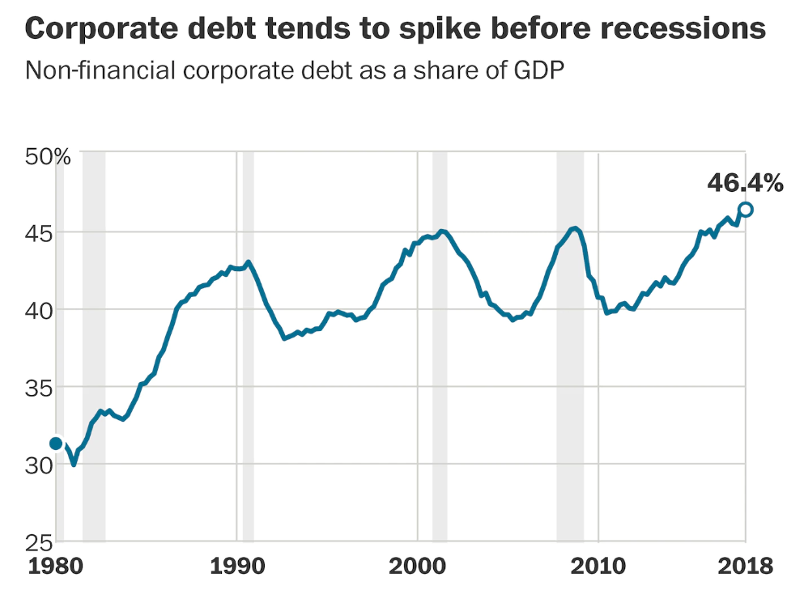
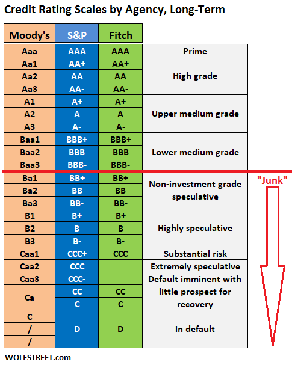
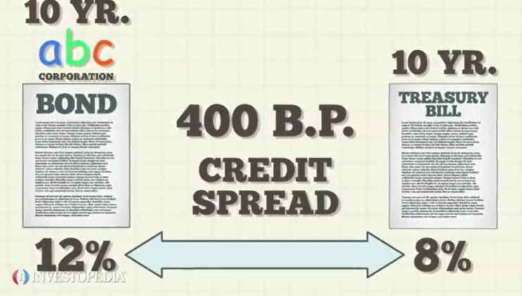

CNN 기사 정리 : "지난 10년간의 초저금리 - 회사채 위기로 돌아오다"
게시: 2020-03-15T09:00:38+09:00
CNN에 보도된 무시무시한 경제 기사 하나를 간략하게 정리해서 공유합니다. 제목은 'Here's what could really sink the global economy: $19 trillion in risky corporate debt' 그러니까 '세계 경제를 침몰시킬 진짜 위협은 19조 달러 규모의 위기 등급 회사채' 입니다. 원문을 읽어보고 싶으시면 아래에서 보시면 됩니다. https://edition.cnn.com/2020/03/14/investing/corporate-debt-coronavirus/index.html 요약 : - 지난 10년간 초저금리로 인해 기업들이 너도나도 빚을 내어 썼고, 그로 인해 회사채가 잔뜩 쌓여있습니다. - 투자적격 등급 중 최하위인 BBB 등급의 회사채는 10년 전의 48조 달러에서 현재 75조 달러로 폭발적인 증가를 했습니다. - 2011년에는 BBB 등급의 회사채는 전체 시장의 1/3 가량을 차지했습니다. 현재, 그런 회사채는 전체의 거의 절반에 달합니다.
- 이제 코로나바이러스와 유가 폭락으로 인해 에너지, 항공, 관광, 자동차 기업들의 채산성이 크게 악화되어 그 회사채의 이자를 못 낼 위험이 커졌고, 이는 회사채로 인한 신용 위기를 초래할 수 있습니다. - 그런 회사채는 은행이 아니라 사모펀드나 헷지펀드, 연기금 펀드 등이 주로 가지고 있는데, 여기서 신용등급이 하나만 더 떨어져도 그런 금융기관들은 회사채를 대거 팔아야 하고, 그러면 금융시스템에 큰 충격이 와서 기업들은 구조조정에 들어갈 수 밖에 없습니다. 그동안 기업들은 금융 위기 이후 빚더미를 쌓아올리면서 10년 간을 보냈습니다. 이제 코로나바이러스 판데믹이 세계를 불경기(recession)으로 밀어넣는 와중에 그 대가를 치를 때가 다가오고 있습니다. 이로 인해 경제를 더 악화시키고 금융시장의 붕괴를 가속화할 것입니다. 그동안의 저금리 정책으로부터 득을 보기 위해 기업들은 사업을 키우면서 회사채(corporate bonds)를 발행해왔습니다. 비은행권(non-banks) 회사채는 2009년 말에 48조 달러 수준이었는데 10년이 지난 2019년 말에는 75조 달러 수준으로 폭발적으로 증가했습니다.

(여태까지의 금융 역사를 보면 경제 불황에 접어들기 전에는 회사채가 대폭 늘어나는 경향이 뚜렷했습니다. GDP 대비 회사채 비율을 나타낸 위 그래프 속에서 회색처리된 부분이 미국 경제 불황 기간입니다. 그래프 출처는 https://www.washingtonpost.com/business/2020/03/10/coronavirus-markets-economy-corporate-debt/ 입니다.)
문제는 이제 코로나바이러스 팬데믹이 발생한데다 사우디-러시아 알력으로 유가까지 폭락하면서 에너지, 관광, 항공, 자동차 산업이 그 회사채 이자를 지급하지 못할 정도로 코너에 몰렸다는 것입니다. 그로 인해 신용등급 강등과 심하면 부도가 다수 발생할 수 있는데, 그러면 가뜩이나 불안한 금융시장이 더 불안정해지고 경제적 충격을 더 심각하게 만듭니다. 이번주 들어 투자자들은 주가와 원유가가 폭락하면서 점점 더 불안해졌는데, 회사채 시장은 훨씬 더 상황이 안 좋습니다. 그나마 안정적인 국고채(government bonds) 대신 위험한 회사채를 사면 얻을 수 있는 수익이 더 커야만 투자자들이 회사채를 사기 때문에, 그 수익률 갭(spread)이 2월 중순부터 크게 벌어졌습니다. 즉 회사채는 이제 훨씬 더 위험한 투자상품이 되었다는 뜻입니다. 이번주 들어 SPDR 블룸버그 바클레이 고수익 채권 ETF (SPDR Bloomberg Barclays High Yield Bond ETF) 가격은 6% 떨어졌고 iShares iBoxx $ Investment Grade Corporate Bond ETF도 8% 이상 떨어졌습니다. 지난 금요일 뱅크 오브 아메리카 (Bank of America)는 고객들에게 변동률이 크게 뛰었고 회사채 펀드에서 빠져나가는 자금이 기록적으로 많았다고 통보했습니다. 이번 사태로 당장 영향을 받는 기업들이 이자를 못 갚으면 부도가 나고, 또 신용평가 회사들이 기업들의 신용등급을 강등시키게 됩니다. 그러면 회사채에 투자했던 투자자들이 어쩔 수 없이 헐값에라도 회사채를 내다 팔아야 합니다. 이런 위험에 가장 크게 노출된 기업은 에너지 회사들입니다. 이들 기업들은 송유관 건설 등의 프로젝트 때문에 최근 몇 년간 회사채를 잔뜩 발행했기 때문입니다. 이제 수요 부진에 주요 산유국들인 사우디-러시아 간의 알력 등으로 인해 유가가 1월초 대비 50% 수준으로 폭락하면서 이런 에너지 기업들은 궁지에 몰린 상태입니다. 여태까지는 높은 유가 덕분에 원유를 생산하여 대출 이자를 갚아왔는데, 그게 어렵게 된 것입니다. 모건 스탠리가 내년 중으로 부도가 날 확률이 잇다고 언급한 두 미국 에너지 회사, 즉 체셔피크 에너지(Chesapeake Energy)와 화이팅 석유 회사(Whiting Petroleum Corporation)의 주식은 이번주 투자자들의 집중 매각 대상이 되면서 주가가 폭락했습니다. 항공사, 호텔, 크루즈 회사 등도 곤경에 처했습니다. 트럼프가 수요일에 유럽인들의 미국 입국을 금지하면서 항공사 주식들이 폭락했습니다. 저가 항공사인 노르웨이 항공(Norwegian Air)은 원래 빚이 많았는데, 직원의 50%를 일시 해고(layoff)하겠다고 발표하면서 목요일에 주가가 22% 떨어졌습니다. 자동차 제조사들도 심각한 타격을 받고 있습니다. 코로나바이러스로 인해 이탈리아의 공장들이 문을 닫았고 유럽과 미국에 걸쳐 있는 다른 생산 시설들도 영향을 받을 전망입니다. 이미 자동차 회사들은 수요 감소에 미-중 무역전쟁이 겹치면서 3년 연속으로 매출액이 감소하고 있었습니다. 이제 문제는 누가 그렇게 가격이 빠르게 떨어지고 있는 회사채를 쥐고 있느냐 하는 것입니다. 다행히 은행들은 2008년도 부실 주택담보채권 때보다는 위험한 회사채에 덜 노출되어 있습니다. 그렇다고 회사채 위기가 닥쳐도 금융시스템에 문제가 없을 거라는 이야기는 아닙니다.

큰 문제는 '투자 적격'(investment grade)이라고 간주되는 채권 중 가장 낮은 등급인 BBB (트리플 B) 등급으로 분류된 회사채가 점점 늘고 있다는 것입니다. 이 등급의 회사채들이 한등급 더 내려가서 정크 본드 수준으로 내려가면 투자사들은 위임 규정(mandates)에 따라 그 회사채를 매각해버려야 합니다. 그러면 채권시장에 큰 충격이 오고 자금 유동성(liquidity)이 말라붙게 됩니다. 캐피탈 이코노믹스(Capital Economics)에 따르면, 2011년에는 BBB 등급의 회사채는 전체 시장의 1/3 가량을 차지했습니다. 오늘 현재, 그런 회사채는 전체의 거의 절반에 달합니다. 에너지 기업 중 많은 수가 그 부류에 속합니다. 모건 스탠리에 따르면, 전체 회사채의 50% 정도가 BBB 등급으로 평가되어 있는 것에 비해, 에너지 기업들이 발행한 투자 적격 채권은 67% 정도가 BBB 등급으로 평가되어 있습니다. BBB 등급의 에너지 회사채 340억 달러어치가 이미 하나 이상의 신용평가사에 의해 등급 하락 감시 대상이 되어 있습니다. 게다가 "그림자 은행"들이 많은 액수의 회사채를 가지고 있습니다. 그림자 은행이란 전통적인 은행보다 훨씬 더 적은 규제를 받는 금융기관을 말합니다. 지난 10년간 저금리가 지속되다보니 안전한 국채의 수익률은 바닥을 기었고, 그 때문에 사모펀드(private equity firms), 헷지 펀드, 심지어 연기금 펀드 등도 더 높은 수익률을 노리고 위험도가 높은 채권을 샀던 것입니다. 현재 이런 사모펀드나 헷지 펀드들이 어느 정도의 위험에 노출되었는지는 알려져 있지 않습니다. IMF에서도 최근 금융 안정성 보고서에서 고위험 회사채의 누적량에 대해 문제를 증폭시키고 다음번 경제 불황을 심화시킬 수 있다고 경고하고 있습니다. IMF는 2008년 금융 위기 때의 절반 정도 세기의 경제적 충격을 가정하고 스트레스 테스트를 해보았습니다. 그 결과는 중국, 미국, 일본, 영국, 프랑스, 스페인, 이탈리아와 독일의 총 8개국의 19조 달러어치에 달하는 회사채가 그 정도의 경기 하강시 부도날 위험이 있다는 것 (at risk of default in a future downturn of that magnitude)이었습니다. 이는 전체 회사채의 40%에 해당하는 금액입니다. 일련의 부도, 혹은 그냥 연이은 신용등급 강등과 그에 따른 회사채 가격 하락만으로도 금융 시스템이 흔들릴 것입니다. 뱅크 오브 아메리카 글로벌 리서치(Bank of America Global Research)의 고수익 전략실(high-yield strategy) 수석인 멜렌티예프(Oleg Melentyev)는 지난 금요일 고객들에게 이렇게 통보했습니다. "채권 시장이 되돌릴 수 없는 지점으로 빠르게 움직이고 있습니다. 그 지점을 넘으면 신용 사이클의 전환이 피할 수 없을 뿐만 아니라 되돌릴 수 없게 됩니다. 그렇게 되면 자금 조달이 말라버리고 부도율이 오르며 투자자들은 출구를 향해 도망치게 됩니다. 그리고 그 출구로 향하는 길에서는 자금 유동성이 극히 작아질 것입니다. 이것이 신용 사이클이 끝날 때의 전형적인 모습이긴 하지만, 이번 전환은 정상적인 속도의 3~4배로 질주하는 것으로 보입니다."

(경제 전문가들은 국고채와 회사채의 수익률 갭, 즉 credit spread가 지난 2월 중순부터 전례없이 빠른 속도로 벌어지고 있다고 우려합니다. 즉, 안전한 국고채로 돈이 몰리고 위험한 회사채에서는 발을 빼려는 경향이 커진다는 뜻입니다. 가령 2월 21일까지만 해도 4.98%로 기록적으로 낮았던 싱글-B 등급 고위험 회사채 수익률 지수(ICE BofA Single-B US High Yield Index Effective Yield index)는 3월 13일 7.92%까지 뛰었습니다. 관련 기사는 https://www.cnbc.com/2020/03/12/bonds-the-credit-markets-are-signaling-that-a-problem-is-afoot.html 을 읽어보세요. 윗 그림 출처는 https://www.investopedia.com/terms/c/creditspread.asp 입니다.)
IMF는 상황이 더 악화되면, 기업들은 부채 부담을 줄이기 위해 서두를 것이라고 예상합니다. 여기저기서 직원 해고가 이어질 것이고 사업 투자는 축소될 것입니다. 늘어나는 부도는 은행에게도 타격을 주어 대출도 줄어들게 될 것입니다. 기업들은 그럴 떄 자금이 가장 절실하게 필요할텐데, 돈을 빌리기가 어느 때보다 더 힘들 것입니다. 이미 코로나바이러스로 인해 시작된 세계적 경제 불황은 이 회사채 위기로 인해 더욱 악화될 것인데, 점점 더 많은 경제학자들이 이건 실존하는 위협이라고 경고하고 있습니다. 예상에 따르면 세계가 경제 불황에 빠져든다고 해도, 그건 짧고 굵게 왔다 갈 것입니다. 바이러스의 위협이 줄어들면 세계 경제가 되살아날 것이기 때문입니다. 그러나 시스템적인 신용 위기는 여기에 큰 불확실성을 던집니다.
PS. 나폴레옹 연재는 이번주엔 목요일에 올라갑니다.